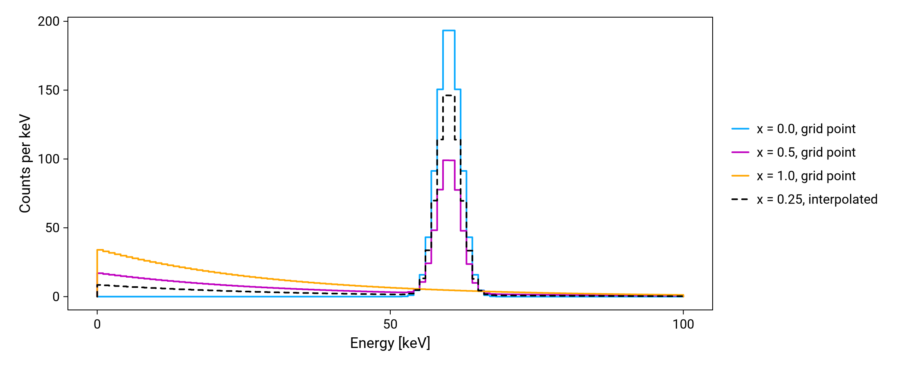

Accounting for systematic uncertainties
Refit.jl contains functionality for handling the effect of systematic uncertainties in simulated spectra.
In a standard template fit of simulated spectra, the activity of each source scales a spectrum of fixed shape. Refit.jl can incorportate systematic uncertainities in the Monte-Carlo templates directly into the model allowing them to become fit parameters and the uncertainity averaged over.
Generalised histograms
This is done with a GeneralisedHistogram object. This is like a Histogram but one where the counts depend on parameters values.
Inside, it holds the histogram simulated at every point of a grid in the parameters. In each bin it interpolates linearly in each parameter between the grid points around the given values.
As an example, take a spectrum with a peak on a falling continuum, where a parameter x moves counts from the peak into the continuum. Its histogram is simulated at three grid points, x = 0, 0.5 and 1. The generalised histogram ghist gives it at any x in between: get_histogram(ghist, (x = 0.25,)) is the dashed line.

For given values of the parameters, get_histogram returns a Histogram and get_weights its counts per bin. The values are given as a named tuple, in any order. Other entries, such as the activities of a fit, are ignored. A value outside the grid is an error.
Reading a generalised histogram
A generalised histogram needs:
- a grid of evenly spaced values for each parameter, with any number of parameters,
- the histogram simulated at every point of the grid, all with the same binning.
The histograms usually come from a simulation that writes them to an LH5 file, in the format described below. read_generalised_hist reads one. read_generalised_pdf also divides by the number of simulated primaries and averages several files with weights, like read_pdf:
ghist = read_generalised_pdf("simulation.lh5"; groups = "pdf/mul1/all")A generalised histogram can also be built directly from histograms in Julia, as in the example above. hists is an array with one dimension per parameter, and each further argument is a pair name => values for one dimension, in the order of the dimensions:
ghist = GeneralisedHistogram(hists, :x => 0.0:0.5:1.0)File format of a generalised histogram
A generalised histogram is stored in an LH5 group with two parts: the description of the grid in grid_info, and the histogram of every grid point in grid. In a file of simulated spectra it takes the place of a histogram, for example at pdf/mul1/all, next to the number of simulated primaries. For two parameters, whose names stand here as <name0> and <name1>:
/
├── nr_sim_events number of simulated primaries
└── pdf
└── mul1
└── all
├── grid_info
│ ├── axis_0
│ │ ├── name "<name0>"
│ │ └── values
│ │ ├── first
│ │ ├── last
│ │ └── step
│ └── axis_1
│ ├── name "<name1>"
│ └── values first, last, step
└── grid
├── <name0>_0
│ ├── <name1>_0 histogram
│ ├── <name1>_1 histogram
│ :
├── <name0>_1
:The names are free, for example fccd and tl in the FCCD tutorial.
The conventions are:
- Each
axis_dofgrid_info, counted from 0, is one parameter: itsnameand evenly spacedvaluesfromfirsttolastin steps ofstep. The values may carry their units as an attribute, which is not read. - The groups in
gridare nested in the order of the axes. The group<name>_<i>holds thei-th value of that parameter, counted from 0. Every combination of values must be present. - Each grid point is an LH5 histogram. All of them have the same binning and hold the raw counts of the simulation.
- Every grid point is simulated with the same number of primaries,
nr_sim_events. This is required: a single number normalises all the grid points.
Selecting the fit range
select_bins selects the bins of a fit in the same way as build_forward_model: it rebins with binning (see Binning) and keeps the bins fully inside e_low to e_high, at every grid point. It works the same for a Histogram, such as the measured spectrum, so both get the same bins:
ghist_fit, bin_edges = select_bins(ghist; binning = 5, e_low = 20, e_high = 100)
get_weights(ghist_fit, (x = 0.3,))16-element Vector{Float64}:
24.520414252572277
20.756082551549774
17.569644560207834
14.872383033039723
12.589200443054267
10.656682318126563
13.05534032730938
353.6007978030715
352.42857277548916
9.506027993863116
4.631462235888553
3.9203176044830634
3.3184772079509437
2.809030310996504
2.377792822922339
2.012758170179824Selecting bins and interpolating both sum counts, so the order does not matter. Select the bins once, before the fit, so that each evaluation only touches the fitted bins. rebin_hist rebins every grid point without selecting a range.
Fits with a generalised histogram
build_forward_model takes a generalised histogram in place of a Histogram in any component (see Model components). At each evaluation it interpolates the spectrum at the values of the parameters, then scales it by the activity:
components = Dict(:source => ghist, :background => (analytic = (E, p) -> p.bkg,))
model, bin_edges = build_forward_model(components; e_low = 5, e_high = 100, binning = 5)get_priors estimates the range of the activity at every grid point and uses the widest. The prior range of each parameter of the grid must lie inside its grid.
For a simple fit, the model can also be written by hand with the bins of select_bins, as in the FCCD tutorial. Any function of the parameters that returns the expected counts in the bins of the measured counts is a valid forward model for build_likelihood.
Between grid points, linear interpolation is exact only if the counts in each bin are linear in the parameter. It suits a parameter that changes the counts in each bin smoothly, such as a dead layer or a source position. It does not suit a parameter that moves a peak in energy, such as the energy scale: between two grid points the peak appears twice, at half the height. Such parameters belong in an analytic part of the model. It is up to the user to check that the grid is fine enough, for example by comparing with a simulation halfway between two grid points.